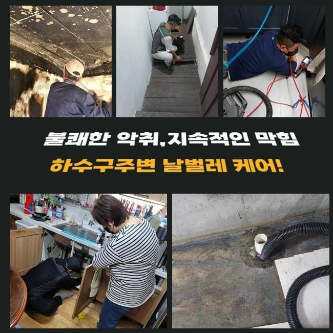
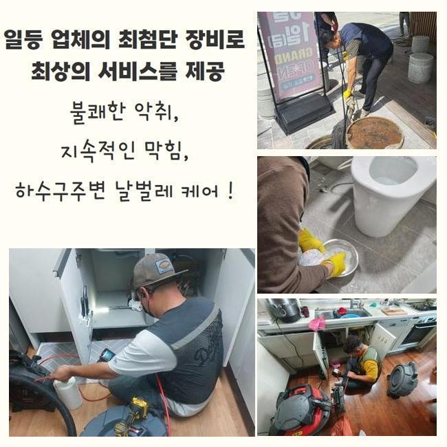
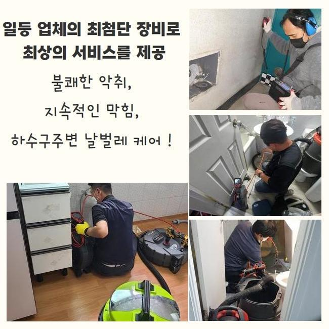
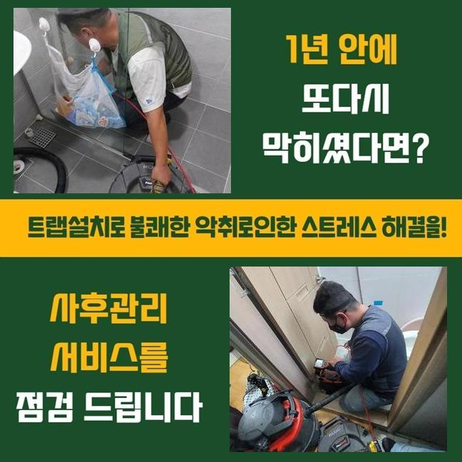
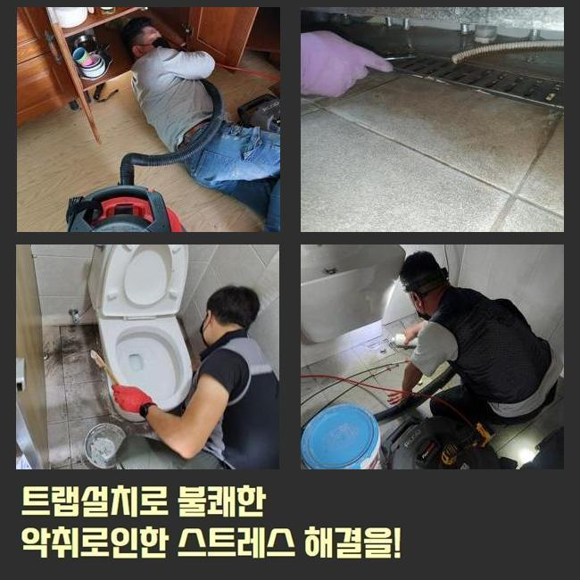
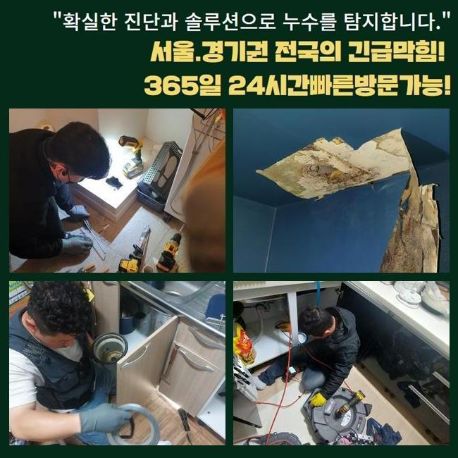
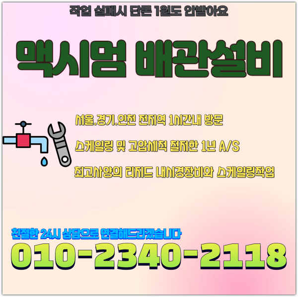

🏠 삼동하수도막힘 청계동 집수정청소 설비출장
용인 하수구막힘 전문 시공 후기

📋 작업 개요
- 위치: 용인
- 서비스 유형: 하수구막힘, 배관막힘, 집수정막힘, 뚫는업체, 배관청소, 고압세척
- 작업 일시: 2025. 2. 13. 11:40
- 업체명: 하수구수사대 (010-5615-2118)
🔍 문제 상황
삼동하수도막힘 청계동 집수정청소 설비출장
얼마전에 고객분의 집으로 찾아뵈어 바깥에 위치한 하수라인을 뚫었는데요
전문성이 뛰어난 기기를 써서 뒤탈없이 청소를 했어요
물이 안빠지는 문제들이 발생된 건 약 1주일 정도 되었다고 합니다
하수관은 물들이 흘러가며 오수들을 따라서 잔여물질들이 흐르는데 내측을 시작으로 해 점진적으로 누적되면서 개별관로가 막힙니다
잔해의 양들이 많거나 크기마저 크다면 점점 더 심해질 수 밖에 없어요
이물의 형태에 따라 전부 배출되는데에는 한계들이 있을 수 밖에 없어요
이렇게 통수불능의 증세가 생겨나면 스스로의 방식들로 해결될 수 없는 경우들이 자주 있어요
의뢰자가 혼자서 평상시에 이용해보는 방법은 크리너나 베이킹소다 등을 쓰는것일텐데요
증상들이 나타나고 기간들이 도래하지않았을 경우엔 효과를 볼 수 있는 조치겠지만 바깥이라면 개선이 안됩니다
밖에서 증세들이 야기된다면 자가조치로 풀어가는게 힘들어 전문가들의 도움들을 고려하시는게 가장 효과가 좋아요

🔎 원인 분석
💡 전문가 진단: 정밀 진단 장비를 사용하여 슬러지의 고착 여부를 판명하고 타격/세척 작업을 실시했습니다.
전문진들의 해결과정으로서 배수관이 어떠한 영향으로 정체된건지 명확한 까닭을 특정하는건 당연하거니와 염기성용액들을 쓰는 조치들이 아닌 빈틈없이 잔해들을 제거하여 오랫동안 하수관을 깨끗히 유지시킬 수 있어요
이번 물이 안빠지는 또한 저희전문가들은 적재적소에 맞는 기기를 활용하여 안정적으로 잔해까지 제거시켜서 깊숙한 지점까지 1차 통수 공간을 확보했어요
안타깝게도 밖에 위치한 라인에서 증상이 생긴것이였고 조치하는것이 불가능해 해결을 요청하셨습니다
저희들은 고객분의 시간들이 가능하다라면 바로 찾아뵈어 현장에서의 작업들을 착수하죠
의뢰인분의 상담을 받았더니 트러블장소는 마당라인이였는데요
단독주택 외부에 존재하는 배수관이 막힌 탓에 우천 시 고여버리는 형상이였습니다
특히 비들이 내릴때 돌멩이나 담배꽁초와 같이 이런저런 이물들이 흐르죠
바깥에서 물을 쓰면 갑작스럽게 관로로 답답하게 내려가는 현상이 자주 있었다고 합니다
초반엔 고객은 기간이 지나게되면 괜찮아 지겠지 하시고는 수습을 미뤘다고 해요
예상치못한 시점에 해결이 늦었던 까닭인지 갑작스럽게 고이게되며 안내려갔다고 해요
발등에 불이 떨어져 며칠동안에 굉장히 느린 속도로 통수되는 현상을 보시고서 황급하게 문의를 주신것이였죠

🔧 작업 과정
가옥 특성 상 이웃에게 피해들을 끼치진 않았지만 스스로 관리들이 요구되는 장소에요
1시간 내 출동이 이뤄지는 업체가 잘 보이지 않아 난처하셨는데 저희들은 바로 가능했기에 문의를 빠르게 남겨주셨습니다
저희의경우 평일말고도 휴무에도 찾아뵙고 언제든지 배관 관련 작업들을 하므로 즉시 내방하여 이물제거에 착수했습니다
하수관은 좁기에 육안으로 관찰하기에는 제약이 있습니다
문제의 배관에 내시경장비를 투입하여 심층부 부근 지점에 잔해물이 존재하는지 체크하죠
내시경기기로 쌓여진 잔해들을 어떠한 방식들로 제거시켜야하는지 계획을 세운다면 실용적인 방법들을 선택하죠
일단은 샤프트장비를 운용하고 집수라인 근방은 고수압의 기계들을 운용키로 판단했어요
샤프트기기는 몸체와 연결된 케이블에 사슬모양의 노커부속이 붙어있는데 이 노커부품이 벽측에 흡착된 고착물을 타격하는 도구에요
상황에 알맞는 장치들을 이용하여 확실히 오류들을 잡아냈죠
작업시점에 혹여 뚫어내지못하면 단돈 10원도 청구드리지않는다 고지해드립니다
저희업체는 애초에 고객님이 계신곳에 방문드릴때 출장비들을 별도로 청구하지 않은채로 내방하므로 경제적인 부담이 덜하고 작업완료가 안되면 비용도 안받으니 편히 의뢰해보세요!
방문 시 작업하고 개선이 안된 상태로 철수하여 출장관련 금액을 받는 경우들은 절대 발생치않는다 보증합니다
방문드렸던 장소의 경우 바깥에 위치한 곳들로서 자갈 등도 흘러들어갔었고 축적된 슬러지들과 엉키게되며 점성이 짙고 움직이지 못할정도로 굳어버렸죠
각 이물들끼리 뭉쳐져서 센터부터 배수공간들을 내주었죠
고착화가 심해 간소하게 뚫어내는건 아니였으며 깊은 지점들까지 청소시켜야 했으므로 출수구부터 고압수청소 기계를 이용해야되는 상황들이었습니다
고수압의 기계들을 통해서 확실히 처리가 요구되었던 상태가었습니다
내시경카메라를 사용하면서 깊숙한부분까지 뚫고자했으나 물들이 제대로 흐르는 상태가 아니었습니다
그 까닭으로는 외부유입물과 함께 기름때가 구간별로 큰 범위들에 걸쳐 누적되어 딱딱해진 상태여서죠


✅ 작업 완료
샤프트도구가 이용되지 못하는 스팟으로 고압세척이 동반되야했답니다
그후에 고수압의 기기를 써 기름성분을 배출해내며 깊숙히 박힌 잔해들을 작게 만들어 제거시켰어요
뒤탈없이 제거하니 조금씩 공간이 확보되며 배수과정이 이루어지게 되었고 실내외부의 지점도 통수들이 이뤄졌죠
이 상황들을 의뢰인에게 안내드리고 해당 장소의 해결은 종료되었죠
재발방지 목적으로 일상 중에 꾸준하게 관리에 힘쓰시기 바라고 만에하나 일년이 지나지않아 반복해서 나타날 경우 저희들이 사후관리를 이행하니 심려치 마십시오!




⚠️ 하수구 배관 막힘 예방 및 관리 가이드
- ✅ 머리카락, 비닐, 물티슈 등 물에 분해되지 않는 이물질은 하수구 유입을 절대 금지해 주세요.
- ✅ 하수구 거름망을 씌우고 모여진 이물질은 주기적으로 쓰레기통에 바로 비워주셔야 합니다.
- ✅ 배관 노후가 심할 경우 이물질이 더 쉽게 걸리므로 주기적인 배관 세척(고압세척 등)을 권장합니다.
- ✅ 작업 후 1년 이내 재발 시 하수구수사대에서 무상 A/S 보증 서비스를 제공합니다.
💡 핵심 정리
- 확실한 장비 작업(내시경 점검 및 샤프트 스케일링)으로 원인을 뿌리 뽑습니다.
- 작업 후 1년 이내에 동일한 부위 재발 시 100% 무상 A/S 서비스를 보장합니다.
- 서울 · 경기 · 인천 전 지역에 24시간 언제든 긴급 출동할 수 있도록 항시 대기 중입니다.
❓ 자주 묻는 질문 (FAQ)
🚨 용인 하수구막힘 문제로 고민이신가요?
정확한 원인 진단과 확실한 시공으로 재발 없는 해결을 약속드립니다.
24시간 긴급 출동 | 서울 · 경기 · 인천 전지역 | 1년 내 재발 시 무상 A/S